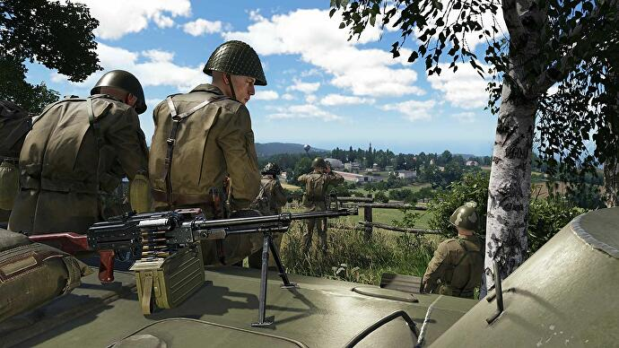

The Chant llegará a PlayStation 5, Xbox Series X/S y PC en octubre
Canceladas las versiones oldgen.
El videojuego de terror The Chant se publicará finalmente el próximo mes de octubre en PlayStation 5, Xbox Series X/S y PC.
Esto significa que las versiones de PlayStation 4 y Xbox One han sido canceladas, convirtiendo a The Chant en el segundo título en las últimas semanas, tras Gotham Knights, que confirma su intención de dejar atrás la pasada generación.
The Chant es el primer juego del estudio canadiense Brass Token, el cual fue fundado hace unos años por ex-trabajadores de United Front Games y Rockstar, los cuales habían trabajado en Sleeping Dogs y Bully, respectivamente.
Según la descripción oficial, "ambientado en un retiro espiritual en una remota isla, en The Chant tendrás que intentar sobrevivir a una serie de terrores etéreos desatados tras un ritual que abre un portal a una dimensión de pesadilla denominada The Gloom".
ACERCA DEL AUTOR
 Cosme fulanito
Cosme fulanito
Jose es fundador de Eurogamer España y el director de su línea editorial y de contenidos. Ama el punk-rock, el cine palomitero de Hollywood, los simuladores de submarinos, la sci-fi, los cacharros de Apple y la década de los 80. Puedes leerlo también en su Twitter o verlo en su canal de Twitch.
Amanita Design anuncia Phonopolis
El primer juego 3D de los creadores de Machinarium y Samorost.
Amanita Design ha anunciado oficialmente su próximo proyecto.
Phonopolis es una aventura que está en desarrollo para varias plataformas - pese a que de momento solo está confirmada Steam - y se convertirá en el primer título con gráficos tridimensionales del premiado estudio independiente.
Según Amanita, "Phonopolis trata temas más reales y relacionables, centrándose en la manipulación y el individualismo, pero manteniendo una experiencia divertida y ligera".
En Phonopolis controlaremos a Felix, un joven que de forma accidental se convierte en la única persona capaz de darse cuenta de los planes del Líder para controlar la distópica ciudad en la que vive.
Según la nota que han publicado para anunciar el juego, la aventura tendrá "elementos de exploración y rompecabezas" y el desarrollo está liderado por Petr Filipovic, Eva Markova y Oto Dostal, los cuales han apostado por un apartado artístico vanguardista que sigue las tendencias del constructivismo, el futurismo y el supremacismo, así como explora su impacto como herramienta de propaganda.
Finalmente, la música está siendo compuesta y producida por Tomas Dvorak, también conocido como Floex y autor de la banda sonora de Machinarium, Samorost y Pilgrims. Los efectos de sonido, por su parte, son obra de Matous Godík (Samorost 3, Creaks). Y un dato importante: hasta ahora ningún juego de Amanita había usado un lenguaje comprensible, pero Phonopolis tendrá un narrador con doblaje.
Phonopolis no tiene fecha de lanzamiento, pero ya se puede añadir a las listas de deseados de Steam.
ACERCA DEL AUTOR
Cosme fulanito
Jose es fundador de Eurogamer España y el director de su línea editorial y de contenidos. Ama el punk-rock, el cine palomitero de Hollywood, los simuladores de submarinos, la sci-fi, los cacharros de Apple y la década de los 80. Puedes leerlo también en su Twitter o verlo en su canal de Twitch.
Bohemia Interactive anuncia oficialmente Arma Reforger
Ya disponible en acceso anticipado.
Bohemia Interactive ha anunciado oficialmente, tal y como se filtró este fin de semana, Arma Reforger.
Definido como "el siguiente paso" en la franquicia de simuladores militares y como "el primer paso en el largo camino hacia Arma 4", Reforger está disponible desde hoy mismo en Xbox Series X/S y PC en formato de acceso anticipado.
En el extenso stream emitido esta tarde el estudio ha confirmado que Arma 4 ya está en desarrollo (su antecesor, Arma 3, está a punto de cumplir diez años), pero que buena parte de la atención del equipo estaba actualmente en Reforger.
Este juego, que supone el estreno de Arma en consolas, se califica como "plataforma" para la saga, al consistir de un nuevo motor, un nuevo sandbox con mundo abierto, tres modos de juego y herramientas integradas de modding, permitiendo a los jugadores crear nuevos contenidos y descargarlos directamente dentro del juego.
La parte de sandbox de Reforger se ambienta en el mapa de Everon, ya visto en el Operation Flashpoint: Cold War Crisis de 2001, aunque evidentemente retocado y reimaginado con la última tecnología. Como podéis suponer, esto implica también el regreso de la Guerra Fría; Reforger nos traslada a 1989, y los desarrolladores han trabajado duro para representar la atmósfera de los ochenta en los cincuenta y un kilómetros cuadrados de extensión del mapa.
En lo que respecta a la jugabilidad, Reforger tiene tres modos multijugador en su primera versión del Early Access. Hay un modo equipo contra equipo llamado Conflict, un modo Capture & Hold y un editor en tiempo real de escenario llamado Game Master.
Esto último es tremendamente importante, porque Bohemia califica Reforger como "una plataforma versátil" y como la oportunidad para la comunidad de experimentar con sus nuevas herramientas. "A través de un enfoque colaborativo e interactivo", contaban, "esperamos aprender valiosas lecciones y llevar la franquicia más adelante, mostrando los emocionantes avances de nuestro nuevo motor Enfusion al mismo tiempo que ofrecemos una experiencia jugable independiente y gratificante".
Sobre los mods, los desarrolladores explicaban que no será posible crearlo en Xbox, pero que los usuarios de consola podrán acceder a todos los modos de la comunidad creados con las herramientas de desarrollo Workbench, siempre y cuando no superen las limitaciones de memoria del hardware de Microsoft.
La idea de Bohemia Interactive es que Reforger esté en formato anticipado durante al menos un año, y que a lo largo de ese tiempo están planificadas tres grandes actualizaciones. En ellas no solo se mejorará el núcleo del juego, sino que también se ampliará con nuevas armas, vehículos, artillería y objetos.
Arma: Reforger ya se puede adquirir en formato anticipado en Steam y Xbox Game Preview, con un precio de 29,99 euros.
ACERCA DEL AUTOR
Cosme fulanito
Jose es fundador de Eurogamer España y el director de su línea editorial y de contenidos. Ama el punk-rock, el cine palomitero de Hollywood, los simuladores de submarinos, la sci-fi, los cacharros de Apple y la década de los 80. Puedes leerlo también en su Twitter o verlo en su canal de Twitch.